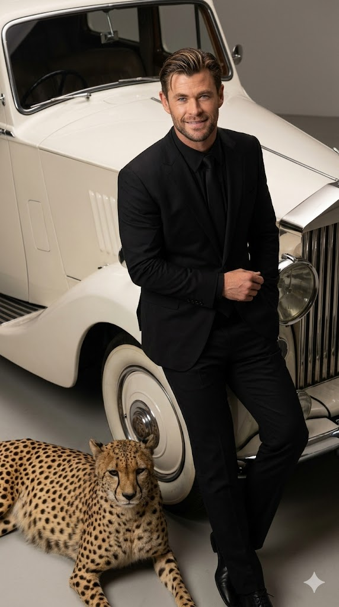
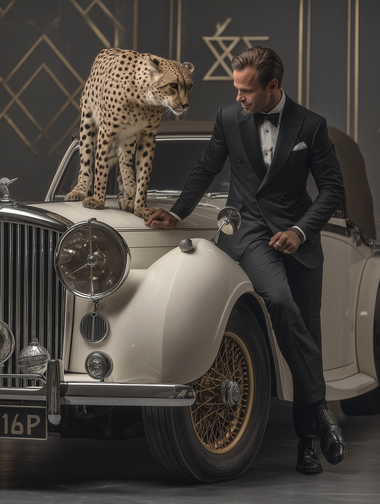

"How to Create an Ultra-Realistic Studio Portrait with Vintage Car and Cheetah" | Brainloom
Generate a striking cinematic studio portrait of yourself in a matte black tailored suit, leaning against a 1920s Rolls-Royce Phantom with a cheetah beside you. This prompt delivers ultra-realism, luxury aesthetics, and exact facial identity.
Generated Images


Prompt Explanation
The Prompt
Ultra-realistic cinematic studio portrait of me with exact same facial and physical appearance from the uploaded image in a matte black tailored suit, slicked back hair, subtle rugged stubble leaning casually against the long pearl white bonnet of a 1920s Rolls-Royce Phantom style luxury car with a cheetah beside it! ar-9:16
How to Use This Prompt
Begin by selecting a high-quality reference photo of your face with clear features and good lighting. Upload this image to your AI generator and copy the link. Paste the link first, then add the complete prompt text. This prompt combines multiple complex elements—your face, a specific vintage car, and a wild animal—so it may take several iterations to get everything right. When you run the first generation, check for three things: your facial identity, the car's accuracy (1920s Rolls-Royce Phantom style, pearl white, long bonnet), and the cheetah's presence beside you. If your face isn't perfect, select the closest match and generate variations. If the car doesn't look right, add more specific details like 'vintage luxury car, long hood, classic Rolls-Royce grille, wire wheels.' The cheetah can be tricky—sometimes it might look cartoonish or be positioned incorrectly. If that happens, add 'realistic cheetah, detailed fur, calm demeanor, standing beside car.' The 'leaning casually' pose should look relaxed and natural against the car. If the pose feels stiff, try 'relaxed lean, one hand in pocket' or 'arm resting on car.' The matte black tailored suit and slicked back hair with subtle stubble are specific styling details—if they're not rendering correctly, emphasize them more. Run multiple generations, tweaking one element at a time until all three components come together in a cohesive, ultra-realistic studio portrait.
Why This Prompt Works
This prompt succeeds because it combines aspirational luxury elements with precise technical instructions, creating a scene that feels both fantastical and grounded in realism. The opening word—'Ultra-realistic'—sets the bar high, telling the AI that every texture, reflection, and detail matters. This isn't a stylized or artistic interpretation; it's a command to render with photographic accuracy. The immediate follow-up—'cinematic studio portrait'—establishes the lighting and compositional approach. Studio portraits have controlled lighting, careful posing, and a focus on the subject. The phrase 'with exact same facial and physical appearance from the uploaded image' is non-negotiable and placed early, ensuring the AI prioritizes your identity above all else. The clothing description—'matte black tailored suit'—is specific and textural. 'Matte' tells the AI the fabric shouldn't be shiny or reflective; 'tailored' means it should fit perfectly, suggesting luxury and attention to detail. 'Slicked back hair' and 'subtle rugged stubble' add character—polished but not overly groomed, sophisticated but approachable. The pose instruction—'leaning casually against the long pearl white bonnet'—creates a relaxed, confident body language that suits the luxury setting. The car description is wonderfully specific: '1920s Rolls-Royce Phantom style luxury car, pearl white, long bonnet.' This gives the AI a clear target—a specific era, make, and color. Rolls-Royce Phantoms from the 1920s are iconic: long hoods, classic grilles, wire wheels, and an undeniable presence. 'Pearl white' adds a luminous quality that will catch studio lighting beautifully. Then comes the unexpected element: 'with a cheetah beside it!' The exclamation mark isn't just punctuation—it conveys excitement, emphasizing that this is a bold, dramatic choice. A cheetah symbolizes speed, exotic luxury, and untamed nature—perfectly complementing the vintage car's elegance. The inclusion of a wild animal forces the AI to render realistic fur, anatomy, and presence, which actually helps maintain the ultra-realistic standard across the entire image. The aspect ratio 9:16 creates a vertical frame that emphasizes the full height of the scene, from the car's bonnet to your standing posture to the cheetah beside you.
Prompt Variations
- {'variation': "Replace the cheetah with 'a majestic white German Shepherd sitting attentively' for a slightly more approachable luxury aesthetic while maintaining the exotic, high-end feel. This variation works well for those who want elegance without the wild animal element."}
- {'variation': "Change the car to 'a gleaming black 1950s Mercedes-Benz 300SL Gullwing' and the suit to 'crisp white dinner jacket with black bow tie' for a different vintage luxury era—sleeker, sportier, and equally glamorous."}
- {'variation': "Modify the setting from studio to 'exotic outdoor location, Moroccan palace courtyard with ornate tile work and fountain' while keeping the car and cheetah. This variation adds environmental grandeur, making the scene feel like a luxury travel editorial."}
Frequently Asked Questions
-
How do I ensure the cheetah looks realistic and not like a cartoon?The 'ultra-realistic' instruction at the beginning helps, but you can strengthen it by adding 'hyper-realistic cheetah, detailed fur, natural posture, wild animal texture' if needed. Also, specifying 'beside it' rather than just 'with it' helps with positioning—the AI understands spatial relationships better with clear placement language.
-
What does 'matte black tailored suit' mean for the final image?Matte fabric doesn't reflect light sharply, which in a studio portrait creates a sophisticated, non-distracting look that keeps focus on your face. 'Tailored' means the suit should fit perfectly, with clean lines and no bagginess. The AI will render this as high-end, custom-fitted clothing.
-
Why a 1920s Rolls-Royce Phantom specifically?This car represents the pinnacle of vintage luxury—long bonnet, classic proportions, undeniable prestige. Its design is instantly recognizable as 'old money' elegance. The pearl white color adds a luminous quality that photographs beautifully and contrasts with the matte black suit for visual impact.
Related Prompts

Realistic Couple Elevator Mirror Selfie Ai Prompt
Create a realistic AI-generated mirror selfie of a couple inside a modern elevator. The man wears an oversized black ...
View Prompt
Ai Prompt For Realistic Fullbody Portrait With 3d Text
Create ultra-realistic AI art of a person using a reference photo. The person poses dynamically in casual, colorful c...
View Prompt
Cinematic Mirror Self Portrait Ai Prompt Back View Led Reflection
AI prompt for an ultra-realistic cinematic portrait shot from behind, showing your reflection in a modern LED-lit mir...
View Prompt
Cinematic Horror Portrait With Lighter
AI prompt for an 8K cinematic horror portrait. The subject holds a lit lighter close to his face, the orange-blue fla...
View Prompt
Cinematic Street Fashion Portrait Ai Prompt
AI prompt to create a cinematic, full-body street fashion portrait. Generates a hyper-realistic photo with dramatic l...
View Prompt
90s Grunge Disposable Camera Portrait Ai Prompt
AI prompt for creating authentic 90s grunge portraits with disposable camera effects. Features flannel shirts, ripped...
View Prompt